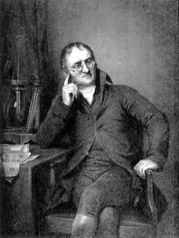

Take some aluminum foil. Cut it in half. Now you have two smaller pieces of aluminum foil. Cut one of the pieces in half again. Cut one of those smaller pieces in half again. Continue cutting, making smaller and smaller pieces of aluminum foil.
It should be obvious that the pieces are still aluminum foil; they are just becoming smaller and smaller. But how far can you take this exercise, at least in theory? Can you continue cutting the aluminum foil into halves forever, making smaller and smaller pieces? Or is there some limit, some absolute smallest piece of aluminum foil? (Thought experiments like this—and the conclusions based on them—were debated as far back as the fifth century BC.)
The modern atomic theoryThe fundamental concept that all elements are composed of atoms., proposed about 1803 by the English chemist John Dalton (Figure 2.2 "John Dalton"), is a fundamental concept that states that all elements are composed of atoms. In Chapter 1 "Chemistry, Matter, and Measurement", we defined an atom as the smallest part of an element that maintains the identity of that element. Individual atoms are extremely small; even the largest atom has an approximate diameter of only 5.4 × 10−10 m. With that size, it takes over 18 million of these atoms, lined up side by side, to equal the width of your little finger (about 1 cm).
Figure 2.2 John Dalton
John Dalton was an English scientist who enunciated the modern atomic theory.
Most elements in their pure form exist as individual atoms. For example, a macroscopic chunk of iron metal is composed, microscopically, of individual atoms. Some elements, however, exist as groups of atoms called molecules, as discussed in Chapter 1 "Chemistry, Matter, and Measurement". Several important elements exist as two-atom combinations and are called diatomic moleculesA two-atom grouping that behaves as a single chemical entity.. In representing a diatomic molecule, we use the symbol of the element and include the subscript 2 to indicate that two atoms of that element are joined together. The elements that exist as diatomic molecules are hydrogen (H2), oxygen (O2), nitrogen (N2), fluorine (F2), chlorine (Cl2), bromine (Br2), and iodine (I2).
Dalton’s ideas are called the modern atomic theory because the concept of atoms is very old. The Greek philosophers Leucippus and Democritus originally introduced atomic concepts in the fifth century BC. (The word atom comes from the Greek word atomos, which means “indivisible” or “uncuttable.”) Dalton had something that the ancient Greek philosophers didn’t have, however; he had experimental evidence, such as the formulas of simple chemicals and the behavior of gases. In the 150 years or so before Dalton, natural philosophy had been maturing into modern science, and the scientific method was being used to study nature. So when Dalton announced a modern atomic theory, he was proposing a fundamental theory to describe many previous observations of the natural world; he was not just participating in a philosophical discussion.
What is the modern atomic theory?
What are atoms?
The modern atomic theory states that all matter is composed of atoms.
Atoms are the smallest parts of an element that maintain the identity of that element.
Which of the following elements exist as diatomic molecules?
Which of the following elements exist as diatomic molecules?
Why is it proper to represent the elemental form of helium as He but improper to represent the elemental form of hydrogen as H?
Why is it proper to represent the elemental form of chlorine as Cl2 but improper to represent the elemental form of calcium as Ca2?
Hydrogen exists as a diatomic molecule in its elemental form; helium does not exist as a diatomic molecule.